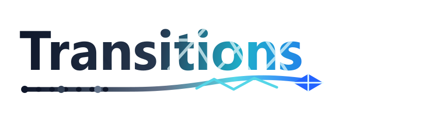

Career tools that meet you where you are
Every career has
a next chapter.
We help you get there.
Eight specialized tools — one for every major career moment. Free to use, private by default, built around the decisions that actually matter.
The roadmap below